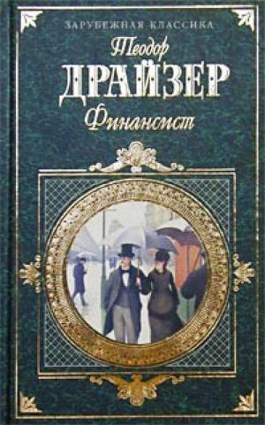

От автора:
А мне б рискнуть судьбой,
Над городом кружа,
Как только за душой
Нет денег ни гроша.
От хмеля сам не свой,
Я ставлю на зеро,
А в небе ангел мой
Танцует болеро.

"Тот кто прочитал эту книгу - получил высшее экономическое образование" - Л.Уафльд
Френк Алджернон Каупервуд родился в Филадельфии в семье мелкого банковского служащего. Он был старшим ребёнком и имел двух братьев – Эдварда и Джозефа и одну сестру – Анну-Аделаиду. С детства Фрэнк отличался сильным, независимым характером и мечтал стать финансистом. Он пять лет наблюдал за работой отца и не одобрял его принципиальность и честность. Дядя Фрэнка – брат матери, богатый плантатор с Кубы по имени Сенека Дэвис был восхищён деловитостью своего племянника и обещал в будущем помочь ему встать на ноги.
На четырнадцатом году жизни Фрэнк принимает участие в аукционе, покупает за половину цены семь ящиков кастильского мыла, после чего перепродаёт их за полную стоимость знакомому лавочнику. С этого же возраста мальчик начинает ухаживать за знакомыми девочками. В семнадцать лет Фрэнк бросает школу. Дядя устраивает его счетоводом в фирму «Генри Уотермен и К». Молодой человек быстро делает карьеру. На Рождество ему платят пятьсот долларов наградных. Через шесть месяцев Фрэнк переходит в банкирскую контору «Тай и К». Дела у его отца также идут хорошо. Семейство переезжает в новый, четырёхэтажный дом.
Девятнадцатилетний Фрэнк увлекается двадцатичетырёхлетней миссис Лилиан Сэмпл – женой владельца обувного магазина. Тай делает его своим компаньоном и за две тысячи долларов покупает место маклера на фондовой бирже. Через год мистер Сэмпл умирает от воспаления лёгких. Ещё через какое-то время в мир иной отходит Сенека Дэвис, оставив своему племяннику пятнадцать тысяч долларов.
Перед войной между Севером и Югом страна погружается в экономический кризис. Фрэнк понимает, что маклерство слишком ненадёжно для формирования капитала и решает заняться собственным учётно-вексельным делом. Он делает предложение Лилиан. Молодая вдова отвечает отказом, но Фрэнк поцелуями и настойчивостью добивается своего. Заработанные деньги новоявленный финансист вкладывает в акции конно-железнодорожных компаний.
Молодые живут в доме Лилиан, который Фрэнк обставляет по собственному вкусу. Первые пять лет герой наслаждается браком. Он с радостью возвращается по вечерам домой к жене и двоим детям – Фрэнку-младшему и Лилиан. Во время войны Фрэнк пытается принять участие в реализации внутреннего займа Пенсильвании. В этом ему помогает подрядчик по прокладке канализационных труб и водопровода – богатый ирландец Эдвард Мэлия Батлер. Займ Фрэнку не достаётся, но зато ему дают хорошие отступные, и он получает известность в финансовом мире.
Фрэнк с отцом строят новые, шикарные особняки по соседству друг с другом. Начавшаяся война мало интересует молодого финансиста, так как не несёт никакой практической пользы – ни ему лично, ни стране. Лилиан начинает дружить с миссис Батлер. Ей не по душе блеск и суета новой жизни, но она обещает мужу «привыкнуть».
Старшая дочь Батлеров – воспитывавшаяся в монастырской школе, золотоволосая восемнадцатилетняя Эйлин, нетерпеливая и тщеславная по натуре, привлекает Фрэнка своей живостью и жизнерадостностью.
В 1866 году новый городской казначей – Джордж Стинер по просьбе трёх главных политических деятелей Филадельфии (Эдварда Батлера, сенатора США – Марка Симпсона и богатого торговца углём – Генри Молленхауэра) предлагает Фрэнку помочь с делом по выпуску нового городского займа для извлечения денег из старых обязательств. Каупервуд начинает играть на бирже, придумывая хитроумные ходы для извлечения прибыли, но по-прежнему считает себя честным финансистом. В это же время он задумывается о покупке акций конно-железнодорожной линии, проходящей между Семнадцатой и Девятнадцатой улицей.
Эйлин и Нора тяготятся своим старым, плохо обставленным домом. Они ругаются за обедом с отцом, который не желает ничего менять в их жизни. Лилиан и сестра Фрэнка Анна не любят Эйлин. В честь новоселья Каупервуды устраивают два приёма – дневной и вечерний, для молодёжи. Влюблённая во Фрэнка Эйлин затмевает собой всех присутствующих девушек. Во время танца молодой Каупервуд, успевший за долгие годы брака разочароваться в жене, флиртует с девушкой и спрашивает, нравится ли он ей. Эйлин даёт положительный ответ. Как-то вечером Фрэнк застаёт девушку за игрой на рояле и целует её в губы.
Первое время влюблённые встречаются за городом. Потом Фрэнк снимает дом на Десятой улице, где они с Эйлин становятся любовниками. Со временем Каупервуд начинает видеть в девушке единственную женщину, с которой он мог бы счастливо прожить остаток жизни.
Фрэнк предлагает Стинеру отказаться от компаньонов в деле приобретения контрольного пакета акций конно-железнодорожных компаний. На реализацию замысла у него уходит полтора года.
Летом 1871 года контора молодого тридцати четырёхлетнего финансиста оценивается в два миллиона долларов, а ему самому принадлежит пятьсот тысяч. Фрэнк строит планы по слиянию принадлежащей ему линии Семнадцатой и Девятнадцатой улицы с купленной для политических покровителей Стинера Северной Пенсильванской. Первоначально видящий смысл жизни в богатстве и женской красоте Каупервуд начинает интересоваться искусством.
7 октября Чикаго охватывает пожар. Огонь полностью уничтожает торговый район города. После выходных на фондовой бирже начинается паника. Над Фрэнком нависает угроза банкротства. Молодой Каупервуд вынужден искать помощи у Батлера, которому он рассказывает всё о своём финансовом положении. Ирландец в начале решает помочь ему, чтобы оградить от скандала Республиканскую партию, но окружающие выступают против этого: сын Батлера – Оуэн считает, что с Фрэнка надо сбить спесь и забрать себе принадлежащие ему акции, Генри Молленхауэр также не против обогатиться за счёт Каупервуда, сенатор Симпсон не видит никакой пользы в подобного рода помощи.
Генри Молленхауэр запрещает Стинеру сотрудничать с Фрэнком. Терпящий крах финансист тщетно пытается спасти положение.
Батлер получает анонимное письмо, из которого узнаёт о связи Эйлин с Каупервудом. Он требует у Фрэнка свои сто тысяч долларов. Эйлин говорит отцу, что её оклеветали, но последний понимает, что дочь лжёт.
Стинер молит Молленхауэра о помощи. Вынужденный изыскивать средства из любых источников Фрэнк решает обналичить у городского казначея чек на шестьдесят тысяч долларов в счёт покупки облигаций городского займа. Каупервуд знает, что рискует и поступает неправильно, так как не сможет сдать купленные бумаги в амортизационный фонд, но не видит другого выхода из сложившейся ситуации.
На следующее утро, 10 октября, Фрэнк по-прежнему тщетно ищет деньги. Лилиан получает анонимное письмо, из которого узнаёт об измене мужа. Во вторник вечером Каупервуд сдаёт дела под опеку своих кредиторов. Он просит у них отсрочку, но банкиры отвечают отказом. Адвокат Фрэнка – Харпер Стеджер говорит, что Каупервуду может грозить тюрьма.
«Гражданская ассоциация помощи городскому самоуправлению» во главе с честным промышленником – владельцем железоделательного завода Скелтоном Уитом начинает расследование дела о хищениях из городской казны. Молленхауэр, Симпсон и Батлер готовятся к обороне. Они пишут подложные письма от имени мэра городскому казначею и от последнего к мэру. Эйлин сообщает Фрэнку о том, что республиканцы собрались сделать его козлом отпущения.
26 октября Фрэнку выдвигают обвинение. Прокурором выступает ставленник Батлера – молодой ирландец Деннис Шеннон. Эйлин следит за делом Фрэнка по газетным заметкам. Отец Каупервуда уходит из Третьего национального банка в отставку.
Батлер просит Молленхауров пригласить Эйлин с Норой в Европу. Девушка отказывается от поездки. Батлер обращается в нью-йоркское отделение детективного агентства Уильяма Пинкертона. Неделю сыщики следят за Эйлин и Фрэнком. Они устанавливают, что молодые люди встречаются в Частном доме для свиданий на Шестой улице. Хозяйка заведения – миссис Дэвис, не желающая разборок с полицией, выдаёт влюблённых Батлеру. Ирландец надеется, что пристыженная Эйлин сдаться, но тщетно. Через несколько дней девушка высказывает отцу всё, что она о нём думает, и говорит, что станет женой Фрэнка вопреки всему. Батлер настаивает на том, что Эйлин должна уехать из Филадельфии. Каупервуд согласен с ним, но с уважением относится к решению Эйлин уйти из дома и поселиться вместе со своей бывшей одноклассницей – Мэри Келлиген и её матерью Кэтрин.
Дело Фрэнка разбирается во Дворце Независимости под руководством старого приятеля Батлера – судьи Уилбера Пейдерсона. Пока идёт процесс Эйлин на две недели уезжает из Филадельфии в гости к друзьям семьи. Двенадцать присяжных выбираются случайным образом из пятидесяти человек, чьи имена пишутся на бумажке и закладываются в барабан. Все они оказываются набранными из средних слоёв буржуазии. У обвинителя и защитника есть право на пятнадцать отводов без объяснения причин. В начале слово берёт Деннис Шеннон, затем – Харпер Стеджер. Половина присяжных считает Фрэнка виновным, половина колеблется в принятии решения, чувствуя, что Каупервуд не прав, но не желая его за это наказывать. В середине процесса происходит опрос свидетелей. Заканчивается суд речью защитника и обвинителя.
6 декабря присяжные признают Фрэнка виновным. При поимённом опросе никто из них не отказывается от своего решения. На несколько дней Каупервуда помещают в Мойэменсингскую тюрьму, начальник которой – шериф Эдлей Джесперс за тридцать пять долларов в неделю размещает финансиста в комфортной комнате, мало похожей на тюремную камеру. Адвокат Фрэнка подаёт апелляцию в Верховный суд штата.
Десятого декабря Эйлин уходит из дома. Батлер едет к освобождённому на время рассмотрения апелляции Каупервуду и просит его вернуть дочь. Фрэнк уговаривает Эйлин вернуться домой.
Молодой финансист пытается восстановить своё имя в деловых кругах. По городу начинают ползти слухи о его связи с Эйлин. Общественное мнение склоняется к тому, что Фрэнк – виноват. Каупервуд нанимает мелкого маклера Стивена Уингейта в качестве подставного лица для игры на бирже.
Двое из пяти судей Верховного суда штата высказывают «особое мнение» по делу Фрэнка, но обвинительный приговор оставляют в силе. Стеджер подаёт апелляцию в Верховный суд США. Следящая за делами мужа по разговорам родных и газетным заметкам Лилиан приходит в отчаяние от разорения и осознания того, что Фрэнк её больше не любит.
Стеджер договаривается с Джесперсом о нескольких днях свободы для Фрэнка. В субботу Каупервуд в последний раз встречается с Эйлин. Девушка обещает ждать его, сколько потребуется, и приходить на свидания в тюрьму.
В понедельник Фрэнк отправляется на вынесение приговора. В суде он присутствует при разборе дела негра Чарлза Аккермена, укравшего кусок водопроводной трубы, и двух пойманных ночью взломщиков. Перед вынесением приговора Каупервуду Стеджер произносит речь. Судья Пейдерсон приговаривает Фрэнка к четырём годам и трём месяцем одиночного заключения в Восточной тюрьме, принудительным работам, штрафу в пять тысяч долларов и покрытию судебных издержек. Стинеру он даёт срок в четыре года и девять месяцев.
Надзиратель Роджерс Кендал регистрирует Фрэнка под номером 3633. «Староста» из заключённых – Кьюби заставляет его вымыться в чугунной ванне, взвешивает и измеряет. Первые две недели Каупервуд проводит на втором этаже, в «пропускнике». Затем начальник тюрьмы Майкл Десмас предоставляет Фрэнку постоянную камеру с двориком, разрешает посещения Уингейта и предлагает работу по плетению стульев.
В тюрьме финансист начинает терять присутствие духа. Шикарные особняки Каупервудов с обстановкой и вещами продают с молотка за бесценок. Надзиратель Уолтер Бонхег за деньги делает Фрэнку многочисленные поблажки. Эйлин навещает любимого в тюрьме. Расчувствовавшийся Каупервуд впервые в жизни плачет.
Финансист просит жену дать ему развод. Лилиан отказывается. Братья Эйлин узнают о её связи с Фрэнком. Через полгода после заключения Каупервуда умирает Эдвард Батлер, через тринадцать месяцев, в марте 1873 года, Фрэнка досрочно отпускают на свободу по особому распоряжению губернатора.
18 сентября 1873 года терпит крах банкирский дом «Джей Кук и К», занятый строительством Северной Тихоокеанской железной дороги. За несколько дней биржевой паники Фрэнк зарабатывает миллион и уезжает вместе с Эйлин на Запад. Лилиан соглашается на развод.